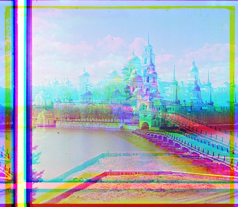

MSE

Prokudin-Gorskii images consist of three glass plate negatives in red, green, and blue respectively. The goal of this project is to take these digitalized images and automatically align them to output a single color image. Since these images are slightly offset, we want to identify the best translation for each color plates to minimize visual artifacts.
The digitalized images are given as three vertically stacked images. I first evenly divide each image into three along its height to isolate the color plates. In the naive single-scale implementation, I exhaustively search over a window of possible displacements by sliding the green and red plates over the blue. This window is set as 10 percent of the height and width of each image operated upon. Then for every alignment, I calculate a similarity score to determine the best translation. Two simple metrics, mean squared error (MSE) and normalized cross correlation (NCC), are implemented. NCC yields much better results than MSE on simple images including monastery.jpg.
While the naive exhaustive search works for smaller images, the problem quickly becomes intractable with high resolution inputs.
To speed up the process, I implement an image pyramid as the search algorithm instead.
The goal is to create a stack of images with different resolutions, with the lowest resolution image at the top
and the highest resolution at the bottom (thus resembling a pyramid), and search for an objective in all of them by gradually
increasing the resolution (i.e. going down the pyramid), reducing the search window until you reach the final image.
The intuition is that if something can be localized in low resolution, then we know the approximate window where such an objective
exists in. So, we can reduce the search window for the next higher resolution image until we pinpoint the optimum in final state.
I shrink each image to 100 pixels on its shortest side as the minimum resolution image, calculated as
log2(min(input.shape) / 100), and the initial search window as 20 percent of
its width and height. Starting from there, I align the image exhaustively as before at its current scale and update
the best translation so far. Then, I reduce the search window by a factor of 4 and scale up the image by 2.
From here, I iterate on the exhaustive search until reaching the original resolution, ensuring that the image is aligned
according to its current scale and last best displacement every time.
Additionally, I crop out the edge pixels and leave 85 percent of each image with respect to their centers when calculating similarity scores.
This refinement significantly improves alignment performance, especially in large images like
lady.tif as shown below.
Below is the execution time of each image alignment using NCC with crop as the similarity metric and multiscale pyramid search on Google Colab CPU.
Image: cathedral.jpg | Time: 6.149 sec
Image: church.tif | Time: 2.424 sec
Image: emir.tif | Time: 2.459 sec
Image: harvesters.tif | Time: 2.489 sec
Image: icon.tif | Time: 4.627 sec
Image: lady.tif | Time: 2.583 sec
Image: melons.tif | Time: 2.509 sec
Image: monastery.jpg | Time: 4.476 sec
Image: onion_church.tif | Time: 4.137 sec
Image: sculpture.tif | Time: 3.678 sec
Image: self_portrait.tif | Time: 2.706 sec
Image: tobolsk.jpg | Time: 4.157 sec
Image: three_generations.tif | Time: 3.334 sec
Image: train.tif | Time: 4.919 sec
This approach yields satisfactory results.

Edge Detection: While most images had good results with calculating NCC based on RGB similarity, emir.tif had a particularly misaligned red plate. I apply a Gaussian blur to smooth and denoise the image, and then featurize the raw image plates through Canny edge detection and calculate similarity metric based on edges. This allows for a better similarity scoring based on perception and structure of objects, rather than raw pixel differences. The tradeoff is a much slower runtime, therefore I don't apply this method to pictures that already look aligned.
Edge Detection: The final results are all calculated from NCC based on RGB similarity, except for emir.tif which operated on edge detection. The artifacts on image edges are manually cropped.